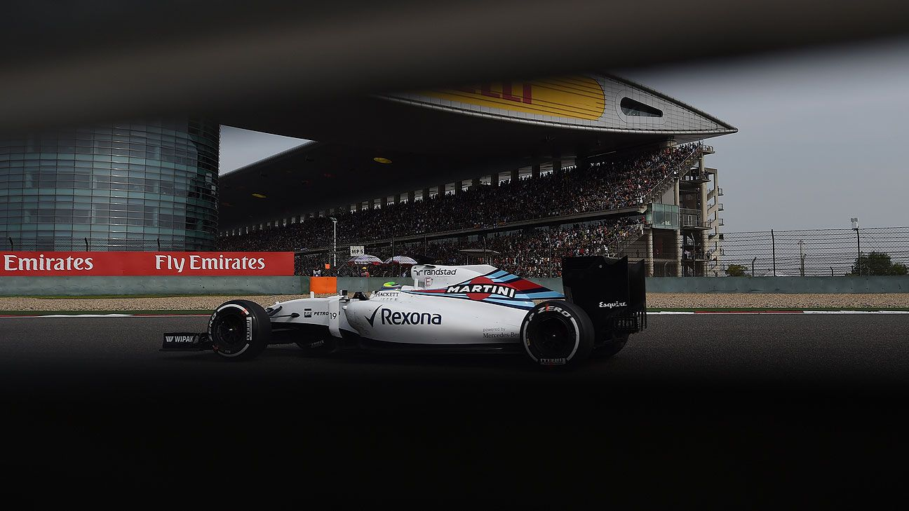
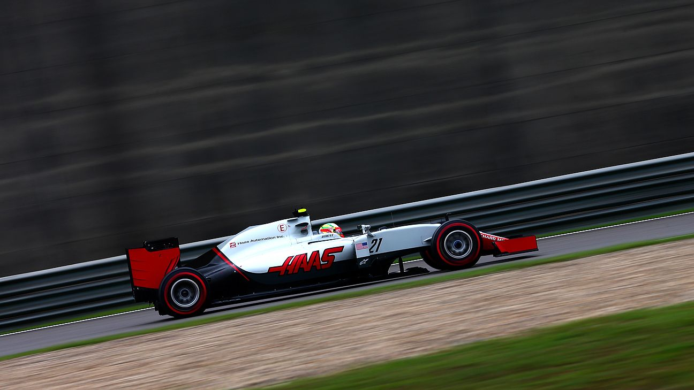

Home
Pilotos
Posiciones
Encuestas

Felipe Massa Feliz por haber frenado a Hamilton
El brasileño logró contener los ataques del campeón del mundo

Esteban Gutiérrez terminó su primera carrera del año
El regiomontano llegó 14to en China